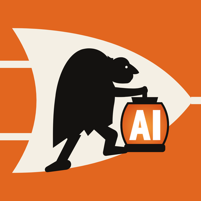

Trainings
Hands-on and practical. You leave with something that works on Monday.


How to set up AI agents with Claude and GPT
Build at least one working AI agent on your own use case, live, in three hours.
- Wed 11 NovOnline, 17:30–20:30Sign up
- Wed 25 NovOnline, 17:30–20:30Sign up
- Sat 28 NovIn person, Zurich, 13:30–16:30Sign up
Previous masterclasses
- 21 Mar 2026From Banking to AIZurich, in person
Private AI trainings for Executives
For Executives who want to lead AI, not delegate it. One-to-one or in small groups, built around your company:
- How AI really works, and where it fails
- Your own AI tools and agents, set up and in daily use
- How to bring AI into your company, step by step
Formats and prices: see the overview (PDF, 8 slides).
Request a private session Download the overviewAgentic AI systems at Digicomp Academy
A 2-day course I teach as part of a CAS: how to plan and build agentic AI systems, with hands-on practice on real service cases. Next run: 10–17 Dec 2026.
See the courseAI Projects
For many years I've been fascinated by one idea: AI that helps people grow. These are the projects where I put it to work. I could not have achieved so much without my AI agents.
No projects match this filter yet.

JAI, my personal AI agent
ChallengeOne person with a job, ventures, teaching and a family never has enough hours.
Developed solutionA personal AI agent on OpenClaw that handles research, coding, marketing, communication and admin. It also built and runs this website.
Ask T.JAI, JAI's twin brother
Ygor, private AI app for iPhone, iPad and Mac
ChallengeMost AI apps send your data through middlemen and keep a copy in the cloud.
Developed solutionAn Apple app that runs AI on your device and keeps your data only there, with no cloud servers and no cloud storage. Your iPhone is your own isolated server, with free local models built in.
Visit ygor.app
Krugozore GPT AI chatbot on Telegram
ChallengeAccess to AI should be open to everyone: no separate AI app needed if you already have Telegram.
Developed solutionAn AI assistant inside a Telegram bot: ask, write, generate images and videos, check the weather and play games, with many different models in one chat.
Results: 110K users in total · 30K monthly users at peak · now 1–2K monthly and 100–200 daily users
Mondrian Code
ChallengeConverting P.M. style into readable coding language
Developed solutionA writing system in Mondrian's five colours: text in ten scripts, from Latin, Cyrillic and Chinese to Korean, Arabic, Hebrew, Hindi and Amharic, becomes a square painting that can be read back, in any of four directions. Built on the ideas behind Huffman coding, ZIP, UTF-8 and LLM tokenizers. The logo is a painting in the code: decode it to read its name.
Paint your own text GitHub
GAF, Generative AI Factory
ChallengeBuilding digital products needs a team most founders don't have.
Developed solutionAn open-source AI factory: your community proposes ideas, AI roles review, build and ship the winners. Tested in Knight Duel and Ygor.
Meet Mr. G.A.F. GitHub
Knight Duel
ChallengeEvery product update waits for a developer's time.
Developed solutionA web game developed by an autonomous AI factory: players suggest, AI agents build and ship.
Play Knight Duel

Fictional Switzerland · Erfundeni Schwiiz
ChallengeA media channel needs writers, editors and video makers every week.
Developed solutionWeekly fictional stories about real Swissness, in English and German, made and published by agentic AI. Made with love for my home, Switzerland.
EN · Fictional Switzerland
YouTube Instagram TikTok XDE · Erfundeni Schwiiz
YouTube Instagram TikTok XAI Agent Bank
ChallengeBanks still run on thousands of manual steps that make them slow and expensive for clients.
Proposed solutionA financial institution designed from day one around AI agents: onboarding, credit, compliance and service, with people setting the rules and signing off.
Human Greatness
ChallengeThe people and inventions that shaped humanity are told in long formats most people never finish.
Proposed solutionOne-minute comic-page stories about the greatest people, inventions and turning points in history, made by agentic AI.
Earlier projects
In the last 4 years I built or co-founded 20+ AI projects, among them Swiss AI Chatbot Factory, a media news aggregator, English-language Swiss news for expats, an AI tutor for kids, an AI palm reader, web games, a football fans' social network (alpha) and an AI competitor analyst for banks. All of them worked well technically; some were sold, others stopped for lack of client demand. Each one added skills and experience I use every day.
Insights
Interviews, and the posts that best explain how I think about AI.
InterviewsVideoPressPodcast
- Oct 2026From banking to AI in SwitzerlandSander Recommends · 35 minVideo
- Oct 2026Managing people — and AIDDDM.FM with Lukasz Schab · interview clipVideo
- Oct 2025How AI is changing credit workGICP · written interview on underwriting, risk and AI copilotsPress
- Nov 2024Unlocking the power of manufacturing data with CloEETech.eu, by Cate Lawrence · with Julia Sabitova, on CloEE and its AI architecturePress
- Sep 2024AI product development and startupsBeyond Coding Podcast #177Podcast
- ShortsNick AI Builder on YouTube"The AI model is not your advantage" and moreVideo
Key ideasPost
- 25 SepThe atomic AI companyThe next unicorn will be built by one to three people and their agents.Post
- 14 OctThe model is not your advantageEveryone has the same models. Your edge is your expertise, put to work with AI.Post
- 6 OctTool, assistant, agentThe difference, and a map of the 13 agents I run.Post
- 8 SepTools vs. skills420 agent tools collapse into ~10 abilities. Skills carry your know-how.Post
- 1 SepWhy I went back to ETHDeep in the company, AI is about data, systems and architecture, not demos.Post
My path
From 18 years of banking to leading AI transformation: where I worked, where I learned, and what I built along the way.
- 2026 – 2027
ETH Zurich
CAS in AI, Data and Machine Learning · Department of Computer Science
- Mar 2026 –
Mentor, Young AI Leaders Zurich Hub
Part of the UN ITU "AI for Good" initiative. Helping early-stage AI talent turn ideas into something real.
- Dec 2025 –
AI Transformation Manager, SFS Group
Taking AI from pilots to production in a Swiss industrial group.
- Nov 2025 –
Applied AI Lecturer and Trainer, Digicomp Academy
Hands-on programmes on building agentic AI systems, starting with ITSM AI agents.
- Aug 2024 –
Chief AI Advisor, CloEE (part-time)
Generative AI for discrete manufacturing: real-time machine data, efficiency and lower emissions.
- Jul 2024 – Aug 2026
Co-founder, Swiss AI Chatbot Factory
An autonomous platform that builds a website chatbot from a URL in three minutes.
- Jun 2024 –
Curator, Head of AI Club Zurich
Private roundtable for the people who run AI inside their companies.
- 2024
GenAI Manager, Capco (contract)
AI strategy and governance for banks in Switzerland and Germany.
- Aug 2023 – Dec 2025
Founder, AI Dev Center
20+ GenAI tools and agents, including a Telegram GPT chatbot with 100K users.
- 2022 – 2023
Self-learning
Full-stack development and Python coding
- 2022 – 2023
Advisor to the Board, MD for Tech and Business Efficiency, Eurasian Development Bank
Banking technology and efficiency projects.
- 2017 – 2018
London Business School
Executive MBA · Banking, Finance and Technology, with distinction
- 2011
Chicago Booth School of Business
Psychology of Effective Management
- 2006 – 2022
International Corporate Business, a large technology bank
16 years in international corporate banking and trade finance.
- 2001 – 2006
IBI
Banking · Management and Anti-crisis Management
Certificates
ITIL · management, finance, risk and financial modelling
T.JAI
The twin brother of my AI agent. Ask about my trainings, AI projects, talks and insights. JAI, my real agent, stays private; T.JAI answers here.
It uses free AI models and runs on a free service with limited access. It knows only what's on this site and is not connected to Nick's real assistant. Answers can be wrong; nothing you type is stored.
By using this chat you confirm that you have read the privacy, cookies and disclaimer note below the chat.
Privacy, cookies and disclaimer
What happens to your messages. When you type a question, it is sent to a Cloudflare Worker and answered by a free AI model (Meta Llama) on Cloudflare Workers AI. We do not save your messages or the answers, we do not use them to train anything, and the chat is not connected to Nick's private assistant or his data. Only the last few messages of this page visit are sent, and they are gone when you close the page.
What we keep. Only an anonymous counter per day to enforce the limits: a one-way hash of your IP address, deleted automatically after 48 hours. No names, no email addresses, no chat history, no profiles.
Cookies. This site sets no cookies of its own and uses no analytics or tracking. The human check (Cloudflare Turnstile) loads only on this page and may use cookies or local storage to tell humans from bots. The topic buttons work without it.
Third parties. The site is hosted on GitHub Pages and the chat runs on Cloudflare. Both process technical data such as your IP address under their own policies: GitHub, Cloudflare.
What we count, publicly. For each AI question and each topic button you tap we add 1 to a topic tally (for example "trainings" or "projects"); the question itself is never saved. Page visits are counted the same way: date, the section opened first and the type of site you came from (for example LinkedIn), without IP address or cookies. The totals are shown openly below and on the Contact & About page.
Please don't share personal, confidential or sensitive information in the chat.
Disclaimer. T.JAI is an experimental demo. Answers are generated automatically by AI and may be incomplete, outdated or wrong. They are not professional, legal, financial or other advice and are not offers or commitments by Nick Gushchin. For anything that matters, check the site pages or contact Nick on LinkedIn. To the extent permitted by law, no liability is accepted for the answers or for the availability of this service.
What people ask T.JAI last 30 days
Contact & About
The fastest way to reach me is a LinkedIn message.
About this website
Its style is a tribute to Piet Mondrian, my favourite artist: primary colours, black lines, nothing extra. The site is built and maintained by JAI, my AI agent, and hosted for free on GitHub Pages. T.JAI, the chat, runs on Cloudflare's free tier. No cookies, no tracking.
Visits last 30 days, counted anonymously
Maintained by JAI, Nick's AI agent · markdown for AI readers · updated 16 Oct 2026
Speaking
Talks, lectures, judging and the community I host.
Head of AI Club Zurich
A small circle of people who run AI inside their companies. Different industries, same real questions: what worked, what broke, what saved it. No slides, no hype, no pitching. Five rounds since June 2025; next in early 2027.
Follow on LinkedInTalks & lectures
Jury & judging
Invite me to speak